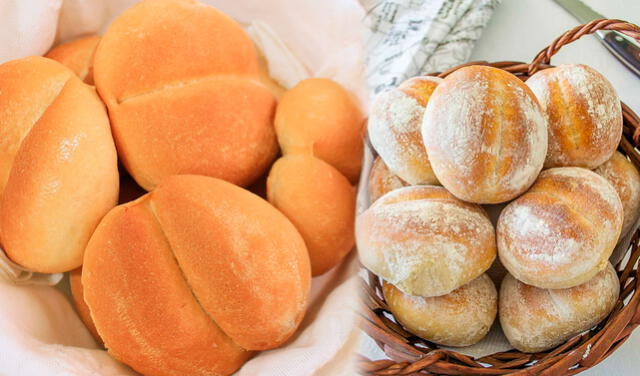

Mini Pan Para Eventos
INGREDIENTES
- harina
- sal
- azucar
- levadura
- leche
- huevo
- margarina
PREPARACION: mescalar la leche, el azucar y la levadura y reservar en un vol aparte mescalar el resto de ingredientes hasta que esten bien unidos agregar la mezcla anterior y amasar, si es nesesario agregar agua lentamente hasta unificar la mescla cortar en fracmentos de gr y hornear hasta que huela a pan.
